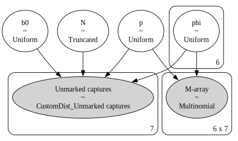
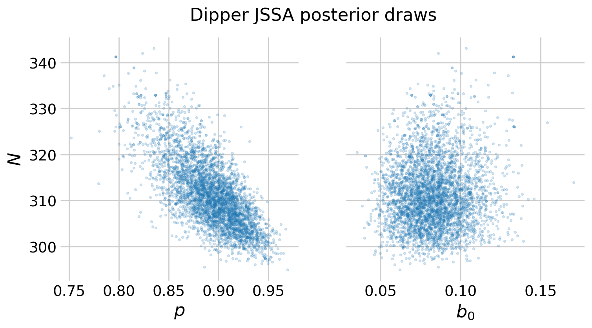

In this notebook, I explore the Jolly-Seber-Schwarz-Arnason (JSSA) model for estimating survival and abundance using capture recapture data. JSSA is very similar to the CJS framework, except that it also models entry into the population, permitting esimation of the superpopulation size. Like the CJS notebook, I have drawn considerable inspiration from Austin Rochford’s notebook on capture-recapture in PyMC, the second chapter of my dissertation (a work in progress), and McCrea and Morgan (2014).
As a demonstration of the JSSA framework, I use the classic European dipper data of Lebreton et al. (1992). I first convert the dataset into the \(M\)-array, since the data is in capture history format.
from pymc.distributions.dist_math import factlnfrom scipy.linalg import circulantimport seaborn as snsimport numpy as npimport matplotlib.pyplot as pltimport arviz as azimport pymc as pm import pytensor.tensor as ptplt.style.use('fivethirtyeight')plt.rcParams['axes.facecolor'] ='white'plt.rcParams['figure.facecolor'] ='white'plt.rcParams['axes.spines.left'] =Falseplt.rcParams['axes.spines.right'] =Falseplt.rcParams['axes.spines.top'] =Falseplt.rcParams['axes.spines.bottom'] =Falsesns.set_palette("tab10")def create_recapture_array(history):"""Create the recapture array from a capture history.""" _, occasion_count = history.shape interval_count = occasion_count -1 recapture_array = np.zeros((interval_count, interval_count), int)for occasion inrange(occasion_count -1):# which individuals, captured at t, were later recaptured? captured_this_time = history[:, occasion] ==1 captured_later = (history[:, (occasion +1):] >0).any(axis=1) now_and_later = captured_this_time & captured_later# when were they next recaptured? remaining_history = history[now_and_later, (occasion +1):] next_capture_occasion = (remaining_history.argmax(axis=1)) + occasion # how many of them were there? ind, count = np.unique(next_capture_occasion, return_counts=True) recapture_array[occasion, ind] = countreturn recapture_array.astype(int)def create_m_array(history):'''Create the m-array from a capture history.'''# leftmost column of the m-array number_released = history.sum(axis=0)# core of the m-array recapture_array = create_recapture_array(history) number_recaptured = recapture_array.sum(axis=1)# no animals that were released on the last occasion are recaptured number_recaptured = np.append(number_recaptured, 0) never_recaptured = number_released - number_recaptured# add a dummy row at the end to make everything stack zeros = np.zeros(recapture_array.shape[1]) recapture_array = np.row_stack((recapture_array, zeros))# stack the relevant values into the m-array m_array = np.column_stack((number_released, recapture_array, never_recaptured))return m_array.astype(int)def fill_lower_diag_ones(x):'''Fill the lower diagonal of a matrix with ones.'''return pt.triu(x) + pt.tril(pt.ones_like(x), k=-1)dipper = np.loadtxt('dipper.csv', delimiter=',').astype(int)dipper[:5]
The JSSA model requires modeling the number of unmarked animals that were released during an occasion. We can calculate this using the \(m\)-array by subtracting the number of marked animals who were released from the total number of released animals.
recapture_array = create_recapture_array(dipper)number_released = dipper_m[:,0]number_marked_released = recapture_array.sum(axis=0)# shift number_released to get the years to align number_unmarked_released = number_released[1:] - number_marked_released# add the number released on the first occasion number_unmarked_released = np.concatenate( ([number_released[0]], number_unmarked_released))number_unmarked_released
array([22, 49, 52, 45, 41, 46, 39])
Similar to the CJS model, this model requires a number of tricks to vectorize the operations. Many pertain to the distribution of the unmarked individuals. Similar to occupancy notebook, I use a custom distribution to model the entrants into the population. Austin Rochford refers to this as an incomplete multinomial distribution.
n, occasion_count = dipper.shapeinterval_count = occasion_count -1# generate indices for the m_array intervals = np.arange(interval_count)row_indices = np.reshape(intervals, (interval_count, 1))col_indices = np.reshape(intervals, (1, interval_count))# matrix indicating the number of intervals between sampling occassionsintervals_between = np.clip(col_indices - row_indices, 0, np.inf)# index for generating sequences like [[0], [0,1], [0,1,2]]alive_yet_unmarked_index = circulant(np.arange(occasion_count))
def logp(x, n, p): x_last = n - x.sum()# calculate thwe logp for the observations res = factln(n) + pt.sum(x * pt.log(p) - factln(x)) \+ x_last * pt.log(1- p.sum()) - factln(x_last)# ensure that the good conditions are met. good_conditions = pt.all(x >=0) & pt.all(x <= n) & (pt.sum(x) <= n) &\ (n >=0) res = pm.math.switch(good_conditions, res, -np.inf)return res
# m-array for the CJS portion of the likelihoodcjs_marr = dipper_m[:-1,1:]cjs_marr
Aside from the unmarked portion of the model, the JSSA model is essentially identical to the CJS model above. In this version, I also model survival as time-varying, holding other parameters constant \(p(\cdot)\phi(t)b_0(\cdot)\)
# JSSA produces this warning. it's unclear why since it samples wellimport warningswarnings.filterwarnings("ignore", message="Failed to infer_shape from Op AdvancedSubtensor")with pm.Model() as jssa:## Priors# catchability, survival, and pent p = pm.Uniform('p', 0., 1.) phi = pm.Uniform('phi', 0., 1., shape=interval_count) b0 = pm.Uniform('b0', 0., 1.)# beta = pm.Dirichlet('beta', np.ones(interval_count))# # only estimate first beta, others constant b_other = (1- b0) / (interval_count) beta = pt.concatenate( ([b0], pt.repeat(b_other, interval_count)) )# improper flat prior for N flat_dist = pm.Flat.dist() total_captured = number_unmarked_released.sum() N = pm.Truncated("N", flat_dist, lower=total_captured)## Entry # add [1] to ensure the addition of the raw beta_0 p_alive_yet_unmarked = pt.concatenate( ([1], pt.cumprod((1- p) * phi)) )# tril produces the [[0], [0,1], [0,1,2]] patterns for the recursion psi = pt.tril( beta * p_alive_yet_unmarked[alive_yet_unmarked_index] ).sum(axis=1)# distribution for the unmarked animals unmarked = pm.CustomDist('Unmarked captures', N, psi * p, logp=logp, observed=number_unmarked_released )## CJS# broadcast phi into a matrix phi_mat = pt.ones_like(recapture_array) * phi phi_mat = fill_lower_diag_ones(phi_mat) # fill irrelevant values # probability of surviving between i and j in the m-array p_alive = pt.cumprod(phi_mat, axis=1) p_alive = pt.triu(p_alive) # select relevant (upper triangle) values# p_not_cap: probability of not being captured between i and j p_not_cap = pt.triu((1- p) ** intervals_between)# nu: probabilities associated with each cell in the m-array nu = p_alive * p_not_cap * p# probability for the animals that were never recaptured chi =1- nu.sum(axis=1)# combine the probabilities into a matrix chi = pt.reshape(chi, (interval_count, 1)) marr_probs = pt.horizontal_stack(nu, chi)# distribution of the m-array marr = pm.Multinomial('M-array', n=number_released[:-1], # last count irrelevant for CJS p=marr_probs, observed=cjs_marr )pm.model_to_graphviz(jssa)

Figure 1: Visual representation of the JSSA model
with jssa: jssa_idata = pm.sample()
Auto-assigning NUTS sampler...
Initializing NUTS using jitter+adapt_diag...
Multiprocess sampling (4 chains in 4 jobs)
NUTS: [p, phi, b0, N]
Sampling 4 chains for 1_000 tune and 1_000 draw iterations (4_000 + 4_000 draws total) took 5 seconds.
Figure 2: Traceplots for the dipper JSSA model. MLEs from the openCR package shown by vertical and horizontal lines.
The traceplots include the maximum likelihood estimates from the model, which I estimated usingthe openCR package in R. Again, there is high level of agreement between the two methods. I plot the survival estimates over time, and the posterior draws of \(N\), \(p\), and \(b\).
Figure 3: Violin plots of the posterior for apparent surival over time from the cormorant CJS. Horizontal lines represent the posterior median.
post = jssa_idata.posterior# stack the draws for each chain, creating a (n_draws, n_species) array p_samps = post.p.to_numpy().flatten()N_samps = post.N.to_numpy().flatten()b_samps = post.b0.to_numpy().flatten()# create the plotfig, (ax0, ax1) = plt.subplots(1, 2, figsize=(8, 4), sharey=True)# add the scatter for each speciesalph =0.2ax0.scatter(p_samps, N_samps, s=5, alpha=alph)ax0.spines.right.set_visible(False)ax0.spines.top.set_visible(False)ax0.set_ylabel(r'$N$')ax0.set_xlabel(r'$p$')ax1.scatter(b_samps, N_samps, s=5, alpha=alph)ax1.set_xlabel(r'$b_0$')fig.suptitle('Dipper JSSA posterior draws')plt.show()

Figure 4: Posterior draws of \(N,\)\(b_0,\) and \(p\) from the dipper JSSA model.
References
Lebreton, Jean-Dominique, Kenneth P Burnham, Jean Clobert, and David R Anderson. 1992. “Modeling Survival and Testing Biological Hypotheses Using Marked Animals: A Unified Approach with Case Studies.”Ecological Monographs 62 (1): 67–118.
McCrea, Rachel S, and Byron JT Morgan. 2014. Analysis of Capture-Recapture Data. CRC Press.